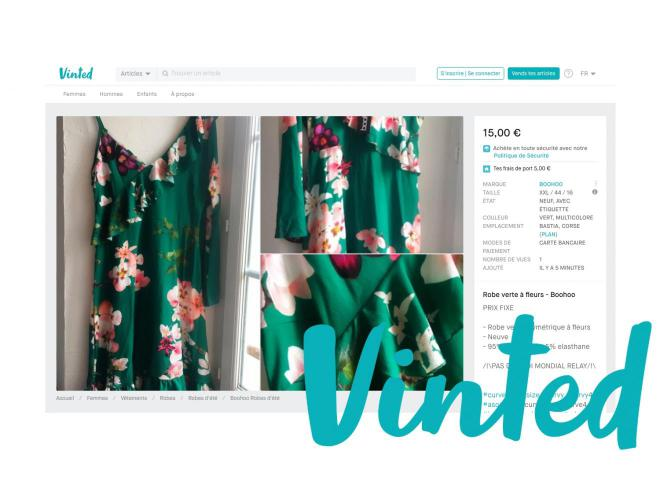

Waze est une application mobile d'assistant d'aide à la conduite
et d'assistance de navigation basée sur un système de
positionnement par satellites couplée à une cartographie
modifiable par ses utilisateurs, sur le principe de la
production participative.

Vinted est un marché en ligne communautaire qui permet
à ses utilisateurs de
vendre, d'acheter, et d'échanger
des vêtements et accessoires d'occasion.
WhatsApp Messenger est une application de messagerie gratuite
disponible sur smartphones pour envoyer et recevoir des
messages, des appels, des photos, des vidéos, des documents
et des messages vocaux.